걱정이 끊이지 않거나, 갑자기 가슴이 두근거리거나, 화가 치밀고 쉽게 지치는 마음의 불편은 잠과 소화, 몸의 긴장과 함께 오는 경우가 많습니다. 좋은꿈참사랑한의원은 한방신경정신과 진료과목에서 마음의 이야기를 충분히 듣고 몸의 신호를 함께 살피며, 위기 상황이나 정신건강의학과 진료가 먼저 필요한 경우는 바로 안내합니다.

스트레스·불안, 쉬운 말로 하면
마음이 힘들면 몸이 먼저 신호를 보내기도 합니다. 잠이 얕아지고, 소화가 막히고, 어깨와 목이 굳는 일이 함께 오는 경우가 많아 마음과 몸을 따로 떼지 않고 함께 살핍니다.
자주 듣는 이야기
- 누우면 걱정이 꼬리를 물어 잠이 안 온다
- 시험이나 발표를 앞두면 가슴이 두근거리고 손이 떨린다
- 지하철 안에서 갑자기 숨이 막힐 것 같았다
- 사소한 일에 화가 나고 나중에 후회한다
- 일요일 저녁만 되면 출근 걱정에 마음이 무겁다
- 가족을 돌보느라 지쳤는데 쉴 틈이 없다
- 혼자 지내며 외로움이 깊어졌다
먼저 이렇게 여쭙니다
말하기 어려운 이야기는 편한 만큼만 하셔도 됩니다.
- 마음이 힘들어진 시기와 계기, 하루 중 심해지는 때
- 잠드는 시간과 깨는 횟수, 식사와 소화
- 두근거림, 숨 막힘, 어깨와 목의 긴장 같은 몸의 신호
- 일과 학업, 가족 돌봄 같은 생활의 부담
- 정신건강의학과 진료 여부와 복용 중인 약
일상에서 먼저 해 볼 수 있는 것
- 걱정을 종이에 적어 두고 정해진 시간에만 다시 보기
- 4초 들이쉬고 6초 내쉬는 호흡을 몇 번 해 보기
- 잠드는 시각과 일어나는 시각을 일정하게 맞추기
- 하루 10분이라도 밖에서 걷기
- 카페인과 술을 줄이고 끼니 거르지 않기
- 믿을 수 있는 사람에게 지금 마음을 한 문장으로 말해 보기
한의원에서 함께 살필 수 있는 경우
마음의 불편과 함께 잠, 소화, 몸의 긴장이 흔들리는 경우에 이야기를 충분히 듣고 몸의 신호를 함께 살핍니다. 대표원장 인사말에서 밝힌 것처럼 좋은꿈참사랑한의원은 스트레스와 마음의 긴장을 살피는 상담을 꾸준히 해 왔습니다.
진찰 후 필요하다고 판단될 때 침, 한약 상담 등을 상태에 맞게 이어서 씁니다. 정신건강의학과 치료를 받고 계시다면 그 치료를 이어 가는 것을 우선합니다.
바로 도움이 필요한 신호
기분이 깊이 가라앉거나 극단적인 생각이 든다면 혼자 견디지 말고 109나 가까운 정신건강의학과에 바로 도움을 요청하세요. 복용 중인 약은 처방한 의사와 상의 없이 줄이거나 끊지 않습니다.
- 죽고 싶다는 생각이 들거나 스스로를 해칠 것 같을 때
- 2주 넘게 거의 매일 우울하고 아무 일도 할 수 없을 때
- 며칠째 거의 잠을 못 자고 다른 사람에게 들리지 않는 소리가 들릴 때
- 가슴 통증이나 숨 막힘이 처음 생겼을 때(심장과 폐 확인이 먼저)
곁에 있는 사람이 할 수 있는 것
가족이나 친구가 힘들어 보이면 해결책을 먼저 말하기보다 이야기를 끝까지 들어 주세요. 잠과 식사가 무너졌는지 함께 살피고, 위험한 생각을 말한다면 혼자 두지 말고 109에 함께 연락해 주세요.
- “요즘 잠은 어때?”처럼 생활부터 가볍게 묻기
- 진료를 권할 때는 함께 가 주겠다고 말하기
- 돌보는 사람도 자신의 잠과 식사를 챙기기
좋은꿈참사랑한의원 진료는 이렇게 진행됩니다
상담에서 마음과 생활의 이야기를 먼저 충분히 듣습니다. 처음부터 모든 것을 말하지 않으셔도 되고, 다시 오시면 지난번 이야기부터 이어서 여쭙습니다.
상도동·노량진에서
노량진에는 시험을 준비하는 분들이, 상도동과 장승배기에는 출퇴근하는 직장인과 혼자 지내는 분들이 많습니다. 좋은꿈참사랑한의원은 평일 오후 8시까지 진료해 학원과 회사 일정이 끝난 뒤에도 들를 수 있고, 토·일·공휴일은 오후 3시까지 진료합니다. 상도역 3번 출구에서 약 200m 거리이며 진료시간은 방문 전 확인을 권합니다.
자주 묻는 질문
불안하고 잠이 안 오는데 한의원에서 상담할 수 있나요?
네. 한방신경정신과 진료과목에서 마음의 이야기와 잠, 소화, 몸의 긴장을 함께 살핍니다. 극단적인 생각이 든다면 109에 먼저 연락하세요.
공황처럼 갑자기 숨이 막혔는데 어디부터 가야 하나요?
처음 생긴 가슴 통증이나 숨 막힘은 심장과 폐 확인이 먼저이므로 내과나 응급실 진료를 받으세요. 검사 뒤에도 반복되면 정신건강의학과와 한의원 상담을 함께 고려할 수 있습니다.
정신건강의학과 약을 먹고 있어도 한의원 진료를 받아도 되나요?
네. 복용 중인 약 이름을 알려 주세요. 약은 처방한 의사와 상의 없이 줄이거나 끊지 않습니다.
시험을 앞두고 너무 불안하면 어떻게 하나요?
시험 일정과 잠, 식사, 몸의 긴장을 함께 여쭙고 생활 속에서 해 볼 수 있는 방법을 정리합니다. 잠을 거의 못 자거나 일상이 어려우면 정신건강의학과 진료도 함께 받으세요.
화가 자주 치밀고 가슴이 답답해요.
화가 나는 상황과 그 뒤 몸의 변화, 잠을 함께 살핍니다. 가슴 통증이 처음 생겼다면 내과 확인을 먼저 권합니다.
가족을 돌보느라 지쳤는데 상담받아도 될까요?
네. 돌봄 일정과 잠, 식사, 쉬는 시간을 함께 여쭙고 작게나마 쉴 틈을 찾습니다. 구청이나 보건소의 정신건강 상담 기관도 함께 알아보세요.
말하기 어려운 이야기도 꼭 해야 하나요?
편한 만큼만 말씀하셔도 됩니다. 처음부터 모든 것을 말하지 않아도 되고, 다음 진료에서 이어서 여쭙습니다.
상담 내용은 비밀이 지켜지나요?
진료 내용은 의료법에 따라 보호됩니다. 걱정되는 부분이 있으면 진료 전에 편하게 물어 주세요.
감수: 좋은꿈참사랑한의원 대표원장 이종호 · 마지막 확인 2026-11-25 · 일반적인 건강 정보이며 진단·치료를 대신하지 않습니다.
스트레스·불안 글 모아 보기 (22편)
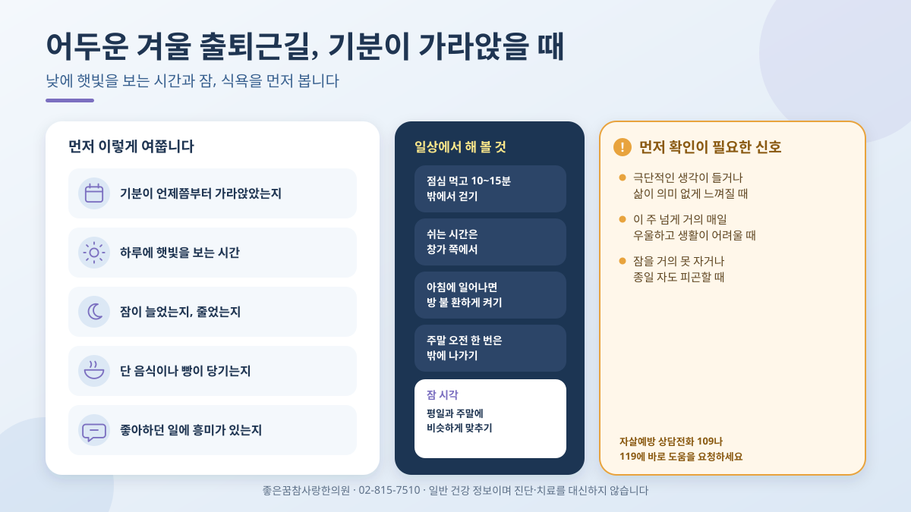
출근할 때도 퇴근할 때도 어두운 겨울에 기분이 가라앉으면 어떻게 살피나요?
해가 짧은 겨울에는 햇빛을 보는 시간이 줄어 기분과 잠이 함께 흔들릴 수 있어, 낮에 밖에 나가는 시간과 잠, 식욕의 변화를 먼저 묻고 점심시간의 햇빛부터 함께 챙깁니다.
수정 2026-11-25
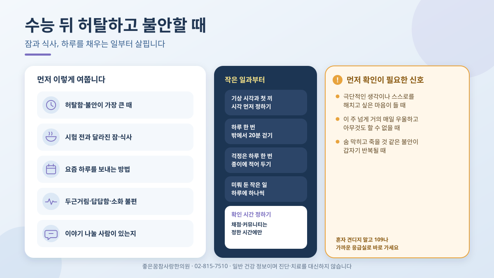
수능이 끝났는데 후련하지 않고 허탈하고 불안할 때는 어떻게 살피나요?
큰 시험이 끝난 뒤의 허탈함과 불안은 오래 달려온 긴장이 풀리며 흔히 겪는 반응이라, 잠과 식사, 하루를 채우는 일을 먼저 묻고 작은 일과부터 다시 세우는 방법을 함께 찾습니다.
수정 2026-11-25

평일 내내 긴장하다 주말만 되면 몸살처럼 아플 때는 어떻게 살피나요?
평일 내내 긴장하다 주말만 되면 몸살처럼 아프다면 주말에도 일어나는 시각을 평일과 비슷하게 두고, 커피를 갑자기 끊지 말고 조금만 줄이며 주중에 짧게 쉬는 시간을 정해 두는 것부터 해 보시기를 권합니다.
수정 2026-11-24
사람 많은 스터디카페에서 작은 소리에도 예민해지고 집중이 안 될 때는?
스터디카페의 작은 소리에도 예민해져 집중이 안 된다면 귀마개나 소음 차단 이어폰, 덜 붐비는 자리와 시간대 찾기, 하루 한 번 쉬는 시간 갖기부터 해 보고, 잠이 얕아지고 지친 느낌이 이어지면 긴장과 잠을 함께 살핍니다.
수정 2026-11-24
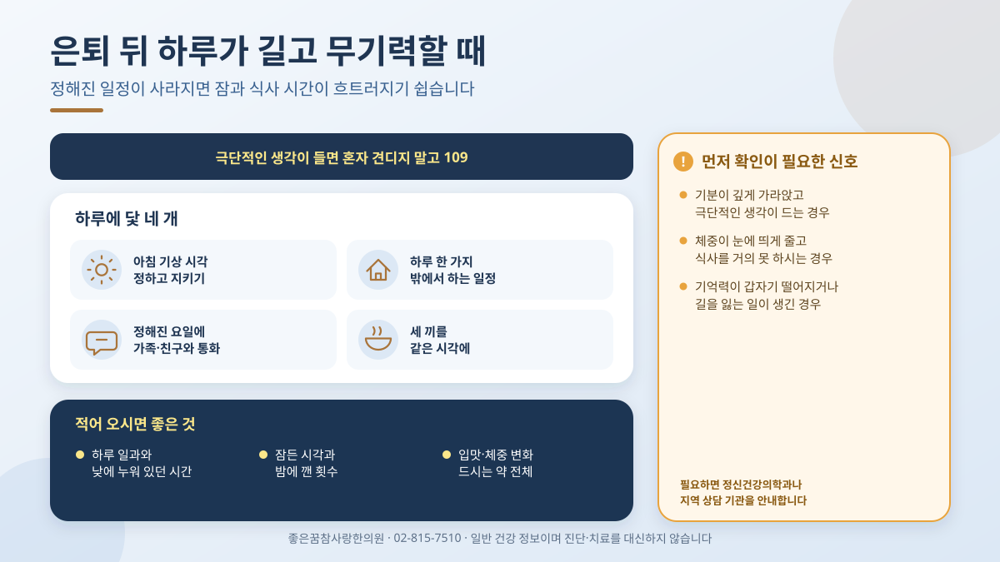
은퇴하고 나서 하루가 길게 느껴지고 무기력할 때는 어떻게 살피나요?
은퇴 뒤 갑자기 일정이 사라지면 하루의 리듬이 흐트러지고 무기력, 잠의 변화, 입맛 저하가 함께 올 수 있어, 하루를 어떻게 보내시는지와 잠, 식사, 사람을 만나는 시간을 먼저 묻고 작은 일과를 다시 세우는 방법을 함께 정리합니다.
수정 2026-11-24
가슴이 두근거리고 불안할 때는 어떤 점을 먼저 확인하나요?
가슴이 두근거리고 불안하면 언제 어떤 상황에서 시작되는지, 카페인과 잠, 갑상선과 심장 질환 가능성을 먼저 확인하고, 가슴 통증과 실신, 숨참이 있으면 바로 응급실을 이용해야 합니다.
수정 2026-11-25

졸업을 앞두고 취업 준비로 불안해서 가슴이 두근거리고 잠이 안 올 때는 어떻게 살피나요?
졸업과 취업을 앞둔 불안은 가슴 두근거림, 소화 불편, 얕은 잠처럼 몸으로 먼저 나타나기도 해, 불안이 심해지는 순간과 하루 생활, 잠을 먼저 묻고 혼자 버티지 않도록 할 수 있는 일을 함께 정리합니다.
수정 2026-11-24
지방에서 올라와 처음 자취를 시작한 대학 신입생이 마음이 지칠 때는 어떻게 살피나요?
처음 자취를 시작해 마음이 지친 대학 신입생은 매일 같은 시각에 일어나 햇빛 보기, 일주일에 한두 번 함께 식사하기, 정해진 날 가족과 통화하기부터 해 보고, 마음이 깊이 가라앉았다면 혼자 견디지 말고 도움을 요청하시기를 권합니다.
수정 2026-11-24

공무원 면접을 앞두고 긴장으로 목소리가 떨릴 때는 어떻게 하나요?
면접을 앞두고 긴장으로 목소리가 떨린다면 4초 들이쉬고 6초 내쉬는 호흡 연습, 모의 면접 녹음, 평소 시각에 잠들기부터 해 보고, 두근거림이나 불안으로 일상이 어렵다면 먼저 도움을 받으시기를 권합니다.
수정 2026-11-24
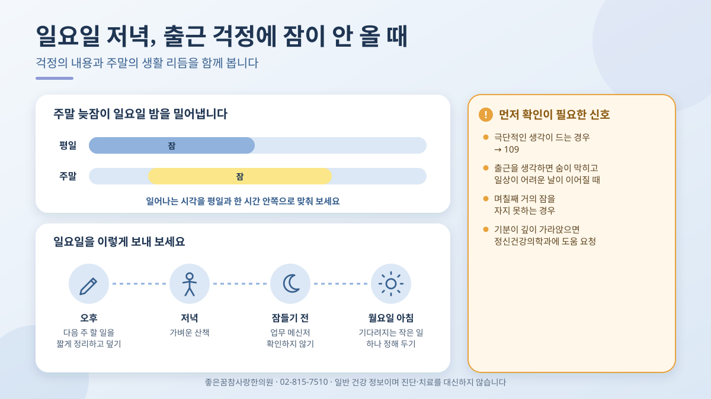
일요일 저녁만 되면 출근 걱정에 가슴이 답답하고 잠이 안 올 때는 어떻게 하나요?
일요일 저녁마다 출근 걱정으로 가슴이 답답하고 잠이 안 온다면 걱정의 내용과 주말 늦잠·늦은 취침 같은 생활 리듬, 월요일 아침 상태를 먼저 묻고 잠과 긴장을 함께 살핍니다.
수정 2026-11-24
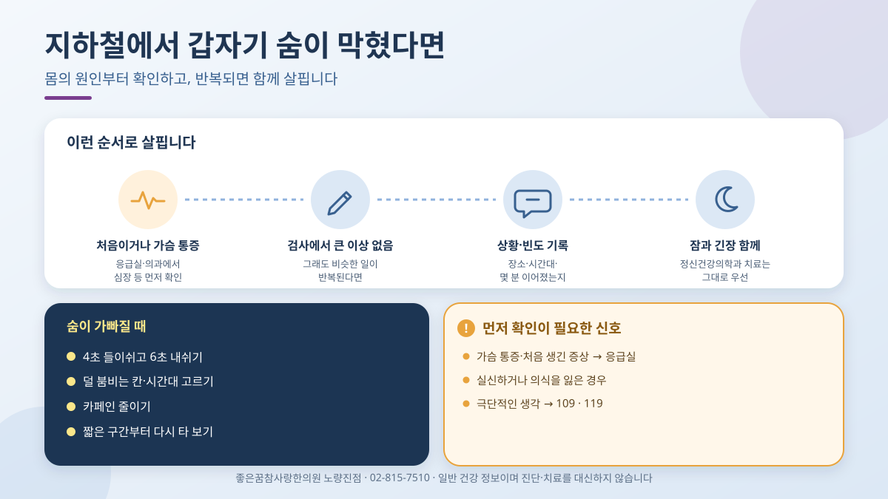
지하철 안에서 갑자기 숨이 막히고 심장이 뛰는 일이 생겼을 때는 어떻게 하나요?
지하철에서 갑자기 숨이 막히고 심장이 뛰었다면 처음이거나 가슴 통증이 있을 때는 먼저 심장 등 몸의 원인을 의과에서 확인하고, 검사에서 큰 이상이 없는데 반복되면 상황과 빈도, 잠과 긴장을 함께 살핍니다.
수정 2026-11-24

원룸에서 혼자 지내며 외로움과 무기력이 길어질 때는 어떻게 하나요?
원룸에서 혼자 지내며 외로움과 무기력이 길어진다면 하루 일과와 잠, 식사, 사람과의 연락을 먼저 묻고 무너진 생활 리듬부터 함께 세우며, 2주 넘게 기분이 가라앉거나 극단적인 생각이 들면 바로 도움을 요청하도록 안내합니다.
수정 2026-11-24
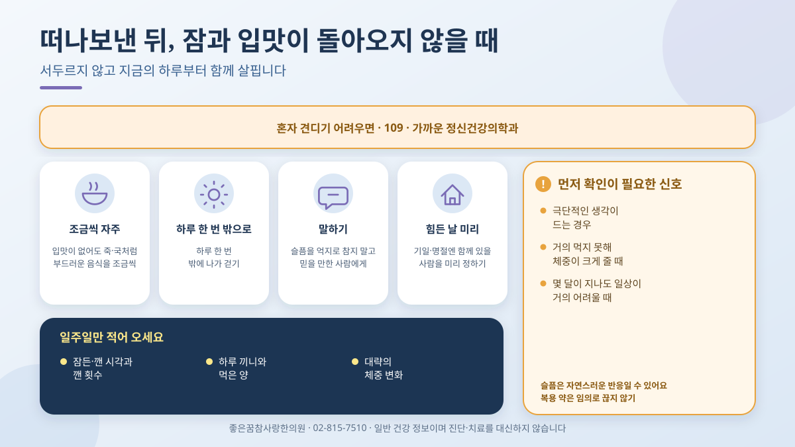
가까운 사람을 떠나보낸 뒤 잠과 입맛이 돌아오지 않을 때는 어떻게 하나요?
가까운 사람을 떠나보낸 뒤 잠과 입맛이 흔들리는 것은 자연스러운 반응일 수 있지만 오래 이어지면 몸도 지치기 쉬워, 잠과 식사, 일상의 변화를 먼저 묻고 함께 살피며 혼자 견디기 어려울 때 연락할 곳을 안내합니다.
수정 2026-11-24
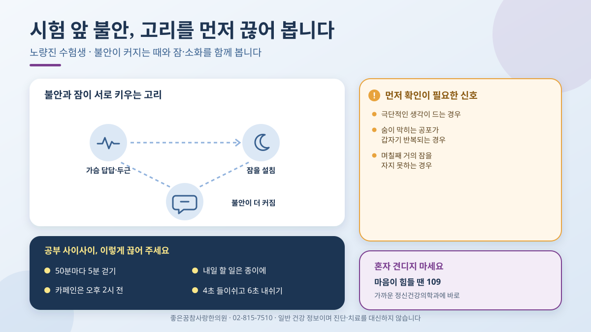
시험을 앞둔 수험생이 불안으로 가슴이 답답하고 잠을 설칠 때는 어떻게 하나요?
시험을 앞두고 불안으로 가슴이 답답하고 잠을 설친다면 불안이 커지는 때와 하루 공부 일과, 잠, 소화를 먼저 묻고 몸의 긴장을 함께 살피며, 공황처럼 반복되거나 극단적인 생각이 들면 정신건강의학과와 109를 먼저 안내합니다.
수정 2026-11-24
창작 일을 하는 사람이 아이디어 압박으로 마음이 쉬지 못할 때는 어떻게 살피나요?
결과물을 계속 새로 만들어야 하는 일은 쉬는 시간에도 머리가 일을 붙잡고 있기 쉬워, 일과 쉼의 경계와 어깨·턱·배에 나타나는 긴장부터 함께 살핍니다.
수정 2026-11-24
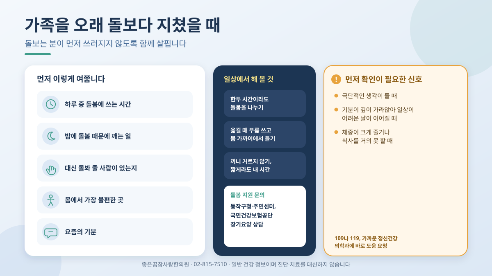
아픈 가족을 오래 돌보며 몸과 마음이 지쳤을 때는 어떻게 하나요?
아픈 가족을 오래 돌보며 지쳤다면 돌봄 일과와 쉬는 시간, 밤에 깨는 일, 몸의 아픈 곳과 마음의 부담을 먼저 묻고 함께 살피며, 돌봄을 나눌 제도와 극단적인 생각이 들 때 연락할 곳도 안내합니다.
수정 2026-11-24
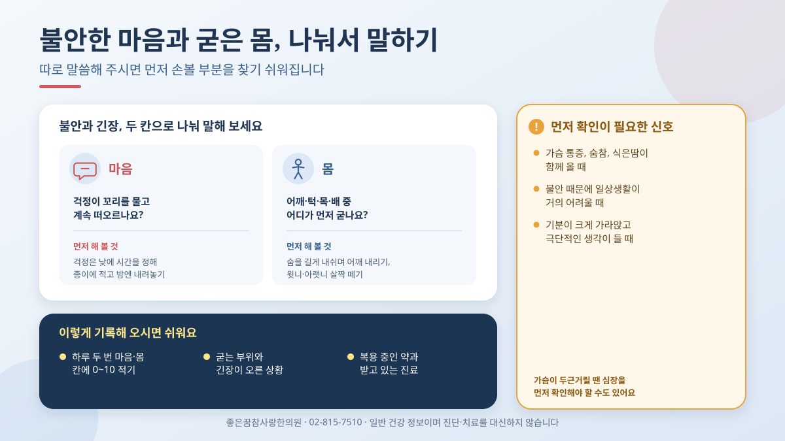
불안한 마음과 몸이 긴장한 느낌은 어떻게 나눠서 이야기하나요?
걱정이 꼬리를 무는 마음의 불안과 어깨·턱·배가 굳는 몸의 긴장은 함께 오기도 하지만, 나눠서 말씀해 주시면 생활에서 먼저 손볼 부분을 찾기 쉬워집니다.
수정 2026-11-24
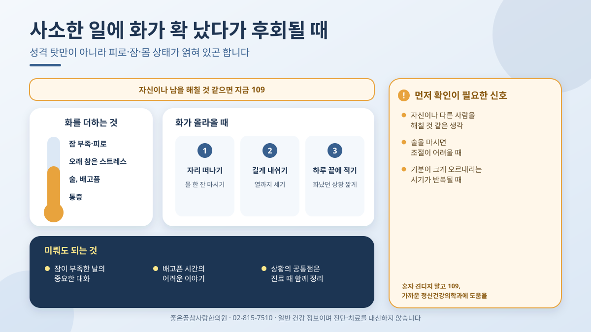
사소한 일에 화가 확 났다가 나중에 후회하는 일이 잦을 때는 어떻게 살피나요?
사소한 일에 화가 확 났다가 후회하는 일이 잦다면 화가 나는 상황과 그때의 몸 신호, 잠과 술, 쌓인 스트레스를 먼저 묻고 몸의 긴장을 함께 살피며, 해칠 것 같은 생각이 들면 바로 도움을 요청하도록 안내합니다.
수정 2026-11-24
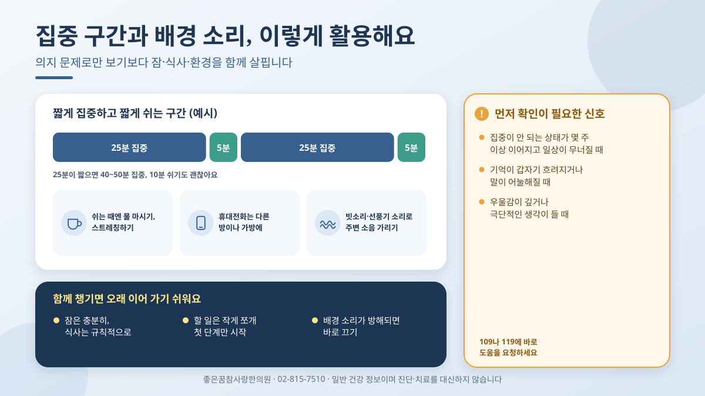
집중이 안 될 때 짧은 집중 구간과 백색소음은 어떻게 활용하나요?
25분 집중 뒤 5분 쉬는 방식과 잔잔한 배경 소리는 집중이 자주 끊길 때 해 볼 수 있는 생활 방법이며, 잠과 식사 같은 기본 리듬을 함께 챙겨야 오래 이어 가기 쉽습니다.
수정 2026-11-24

공부하다 오후에 졸음이 몰려올 때는 어떻게 살펴보나요?
공부 중 오후 졸음은 점심 식사량과 전날 잠, 자세, 실내 환기와 관련 있는 경우가 많아 식사와 잠을 먼저 점검하고, 참기 어려운 졸음이나 코골이·무호흡이 있으면 진료를 권합니다.
수정 2026-11-24
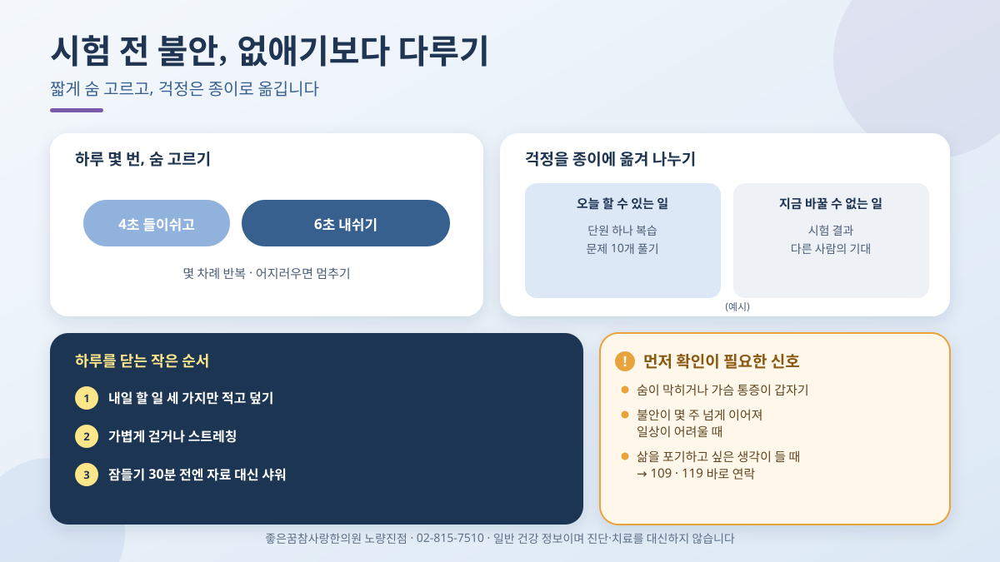
시험을 앞두고 미리 불안해질 때는 어떤 루틴이 도움이 되나요?
시험 전에 미리 불안해지는 것은 흔한 반응이며, 숨 고르기와 걱정 적기, 하루 마무리 정리 같은 짧은 루틴을 먼저 해 보고 일상이 무너질 정도면 상담을 권합니다.
수정 2026-11-25
의욕이 없고 번아웃처럼 지칠 때는 한의원에서 무엇을 먼저 묻나요?
의욕이 없고 번아웃처럼 지치면 일의 부담과 휴식, 잠과 식사, 기분의 변화를 먼저 여쭙고, 우울감이 깊거나 극단적인 생각이 들면 바로 109나 정신건강의학과의 도움을 받아야 합니다.
수정 2026-11-25